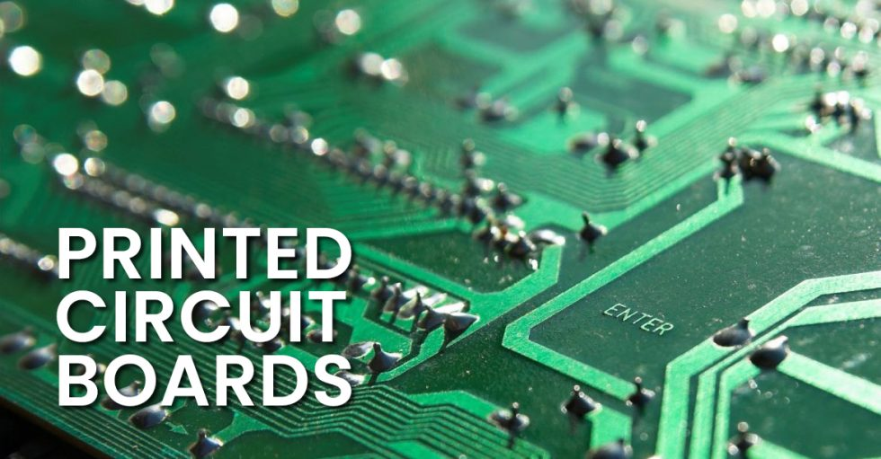

HDI Printed Circuit Boards for Smaller, Faster, Extremely Reliable Products
Sierra Circuits manufactures and assembles high-density interconnect PCBs with
blind, buried, and micro-vias, built-up laminations, and the highest signal integrity
in the industry.
Your time is priceless. Upload your PCB design files and get an instant
online quote for the industry's fastest turnaround time.
You may be surprised how cost-effective the right HDI PCB layout can be.
Sierra Circuits brings you reliable HDI printed circuit boards by ensuring meticulous planning in your stack-up. This strategic approach not only optimizes HDI PCB production costs but also accelerates your time-to-market through streamlined design efficiency. And in terms of reliability, microvias out-perform typical through-holes almost every time.
Down to 1.5-mil trace space, 2-mil holes
Blind vias, buried vias, and microvias
Up to 4 lamination cycles
Fine lines and via-in-pad technology
To achieve the most cost-effective HDI PCB, various factors must be taken into account, including yield, material type, via drilling methods, and imaging. High-density interconnect offers advantages such as higher yield rates due to improved control of drill-to-copper and the utilization of smaller traces that may ultimately result in fewer layers.
It is crucial to engage with our experts early in the design process to identify materials that strike the optimal balance between price, manufacturability, and performance for your specific construction needs.

HDI PCB Sierra Circuits
Sierra Circuits manufactures your HDI PCBs with full intellectual property protection.
more Info
High tech in small form:
Special stack-up help / NPI review
Up to 30 layers
Files evaluated by engineers
Quote sent by email within a few hours
HDI features:
Down to 1.5-mil trace space, 2-mil holes
Blind vias, buried vias, and other microvia techniques
Built-up laminations and high-signal performance considerations
Laser direct imaging
Fine lines and via-in-pad technology
Metal-core
Flex / rigid-flex
Certified for your industry:
Mil-spec
Automotive
Aerospace and defense
Medical devices